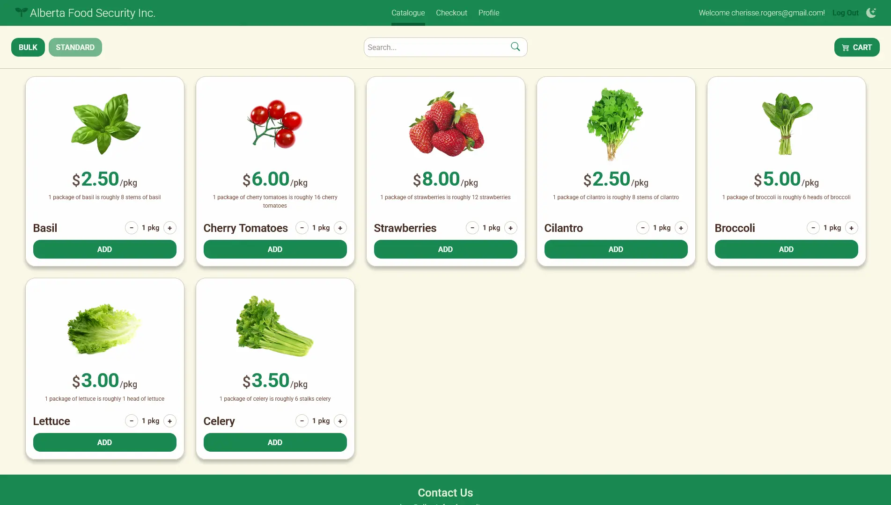
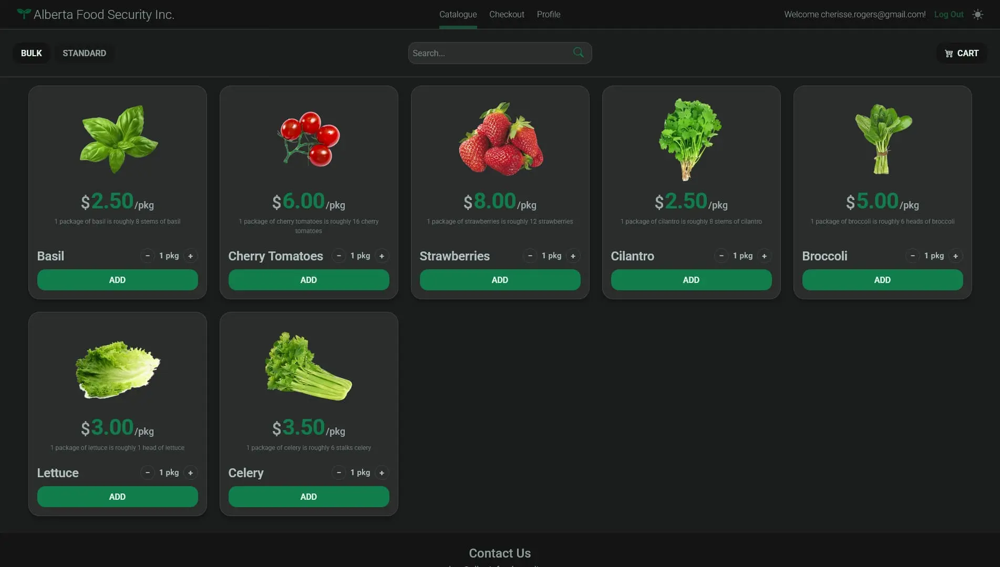
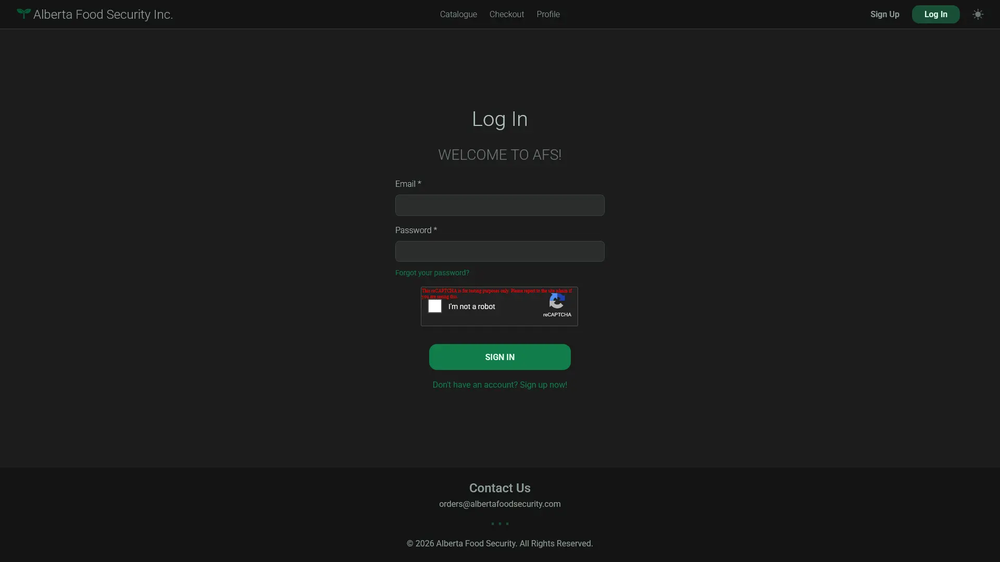
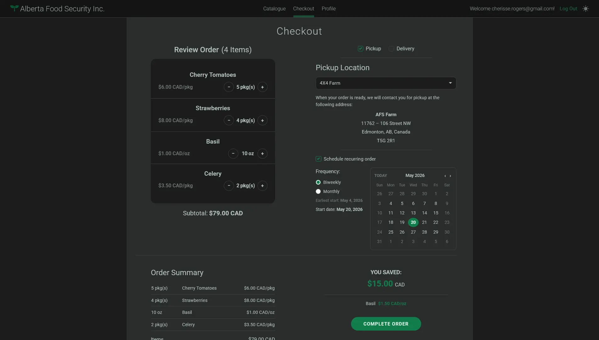
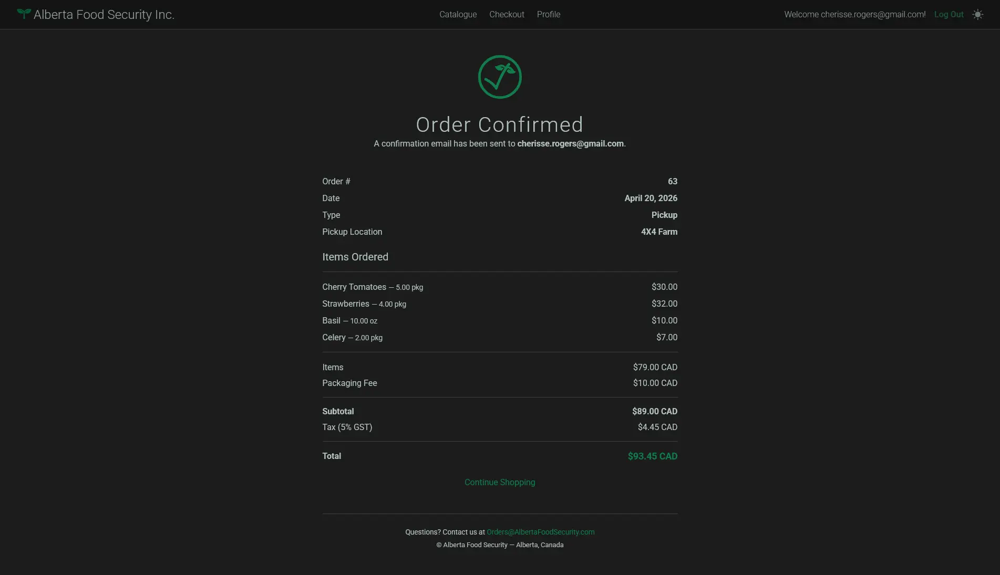
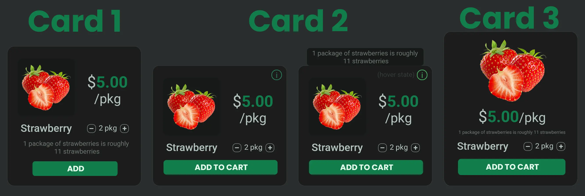
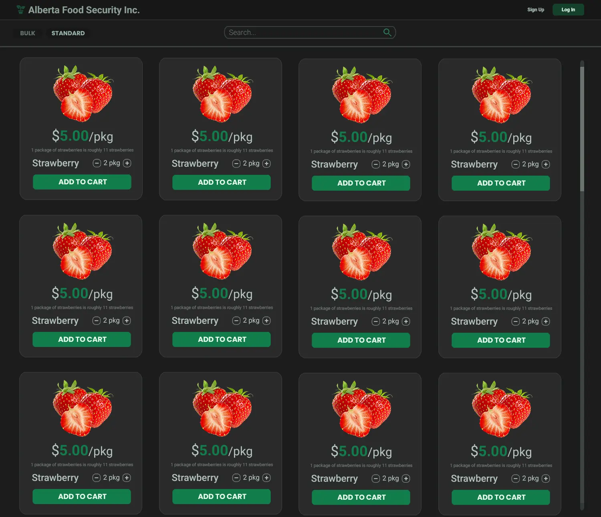

AFS Catalogue Website
Roles
Tech Stack
The Capstone project during my final semester at NAIT. Working on a team with 8 student developers and 1 business analyst, we were tasked with building an online product catalogue website from scratch for Alberta Food Security. It was created in Django/Python and we worked from the planning phase all the way into finalization and preparation for deployment in four months.
I was the main designer on the team, as well as one of the front-end developers. Using Figma and Photoshop, I designed every final screen needed, adjusting according to the client's feedback as necessary.
My primary contributions were:
- Designing finalized versions of every screen using Photoshop and Figma
- Creating the base page templates and global CSS file
- Coding the nav bar and footer
- Ensuring website styling remained consistent and that pages remained mobile friendly
- Implementing light and dark mode
- Creating custom graphics
- Writing documentation for future developers





Click to View Mockup Examples

